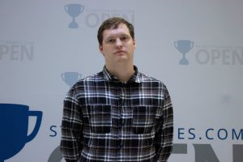
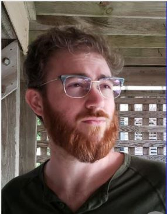
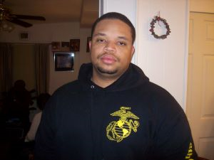
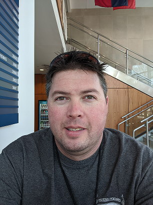

Team Members
Thomas Kennedy
mentor
Stephen Ayers
Stephen Ayers currently resides in Chesapeake, Virginia. He is in his senior year at Old Dominion University completing a degree in Computer Science. He is currently a full time student who also turned his hobby of Magic: The Gathering into a job of sorts as his tournament winnings and content creation supplement his income while he completes his degree. His other hobbies include video games and cooking.
Mike Campbell
Mike Campbell lives just outside of Richmond, Virginia with his wife, Brooke, and their cat and dog, Gaea and Maru. He intends to graduate from ODU in 2020 with a degree in Computer Science, then pursue a career in a specialization he's yet to decide on. Mike enjoys gaming with friends, binging Netflix, the outdoors in cold weather, and math.
Joshua Harris
Joshua Harris is a resident of Virginia Beach in his senior year at Old Dominion University. He is currently pursuing his degree in Computer Science. He also has an associates degree in Business Administration. Joshua has two children with one on the way and a lovely wife. His hobbies include gaming and live streaming on Twitch in his spare time.
Joshua Murphy
Joshua Murphy lives on the Eastern Shore of Virginia, in Nassawadox. He has a degree in Political Science from ODU and is currently in his senior year of getting his Computer Science degree. He is a member of two honor societies: Pi Sigma Alpha. Zeta Omega Chapter at Old Dominion and Phi Theta Kappa Honor Society. Hobbies include scuba diving, video gaming and board gaming.
Aaron Berman
Aaron Berman is a resident of Norfolk, Virgina with his wife. He is currently pursuing a Computer Science degree with a Cyber-Security minor at Old Dominion University. He is a veteran of the United States Marine Corps. working with ground based RADAR systems. He acheived an Associates of Science in Computer Science in 2014 from Tidewater Community College. In 2018, he returned to school for a career change to computer science. His hobbies include collecting new hobbies and not being able to afford them.